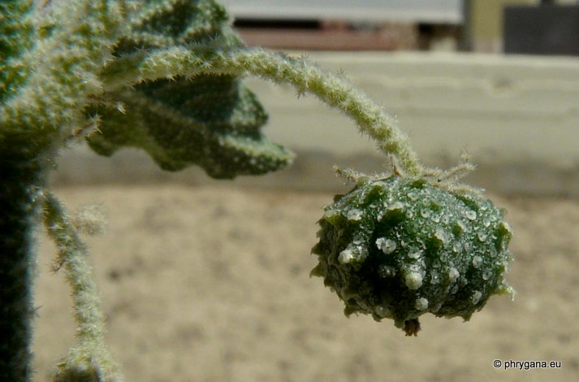

| PHRYGANA | Fauna | Flora | Galles | liste des espèces |
contact -
info - commentaires phrygana1 (at) gmail.com |
| Particularités crétoises | nouveautés | Mines | ressources naturelles |
| Chrozophora tinctoria (L.) A. JUSS. |
| 399 | Flora | EUPHORBIACEAE | Chrozophora NECK. ex A. JUSS. |
|
Chrozophora tinctoria Mires - Kapariana 20 août 2012 |
| Turn-Sole -- le Tournesol des teinturiers -- Tornasole comune -- Tornasol -- Lackmuskraut -- Χρωζοφόρα η βαφική | |
| Plante vert grisâtre | |
| Feuilles: ovales-rhomboïdales à cunées, poilues, couvertes de poils étoilés, entières à sinuées dentées, pétiolés | |
| Tiges: poilues (poils étoilés), dressées | |
| Fleurs: jaunâtres; fleurs mâles subsessiles, en grappes, à 5 pétales linéaires; fleurs femelles petites, à la base de la grappe des fleurs mâles, pédonculées, à 10 sépales; 3 styles bifides | |
| Fruit: capsule trilobée, 6 - 8 mm, verruqueuse-tuberculeuse | |
| Hauteur: 20 - 80 (-100) cm | Type biologique: thérophyte ramifié |
| Floraison: mai juin juillet août septembre | |
| Altitudes: 0 - 700 m | |
| Statut en Crète: indigène | |
| Biotopes en Crète: champs en friche, terrains vagues, jardins, | |
| Distribution: région Méditerranéenne | |
| Note: produit un colorant alimentaire; plante médicinale | |
|
Chrozophora tinctoria Mires - Kapariana 20 août 2012 |
|
Chrozophora tinctoria Mires - Kapariana 20 août 2012 |
|
 Chrozophora tinctoria Mires - Kapariana 20 août 2012 |
|
Chrozophora tinctoria Mires - Kapariana 20 août 2012 |
| 31 août 2012 |
| © paul fontaine -- © Phrygana.eu 2007 -- 2013 |